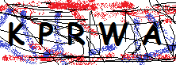

Solving Captchas with C#, AForge.NET and Tesseract
Introduction
A Visual Studio 2015 project which shows how to use the C# integrated with AForge.NET and Tesseract to solve captchas
This technique aims to use the AForge.NET for the pretreatment of images in order to eliminate all factors that are not part of the verification characters. This pre-processing allows the Tesseract OCR has a more effective recognition and greater probability of success.
Article
detailed the creation of this project,
you find on this link:
https://code.msdn.microsoft.com/Solving-Captcha-with-C-dadf37cd/https://code.msdn.microsoft.com/Solving-Captcha-with-C-dadf37cd/andresecco.com.br/2015/09/reconhecimento-de-captcha-com-aforge-net-e-tesseract/
Getting Started
To build and run this sample as-is, you must have Visual Studio 2015
In most cases you can run the application by following these steps:
- Download and extract the .zip file.
- Open the solution file in Visual Studio.
- Customize AForge.NET filters according to the image of your captcha.
- Build the solution, which automatically installs the missing NuGet packages.
- Run the application.
- Test with your captcha.
Got questions? See this article. Enter here
Test Results
Results of tests performed with some images
Original Images


Results


Documentation
AForge.NET Documentation
http://www.aforgenet.com/framework/docs
Tesseract Documentation
https://code.msdn.microsoft.com/Solving-Captcha-with-C-dadf37cd/https://code.google.com/p/tesseract-ocr/wiki/Documentation
More Information
This project is maintained and updated on GitHub. Enter here.
Author: André Luiz Secco
Twitter: @andre_secco
GitHub: andreluizsecco